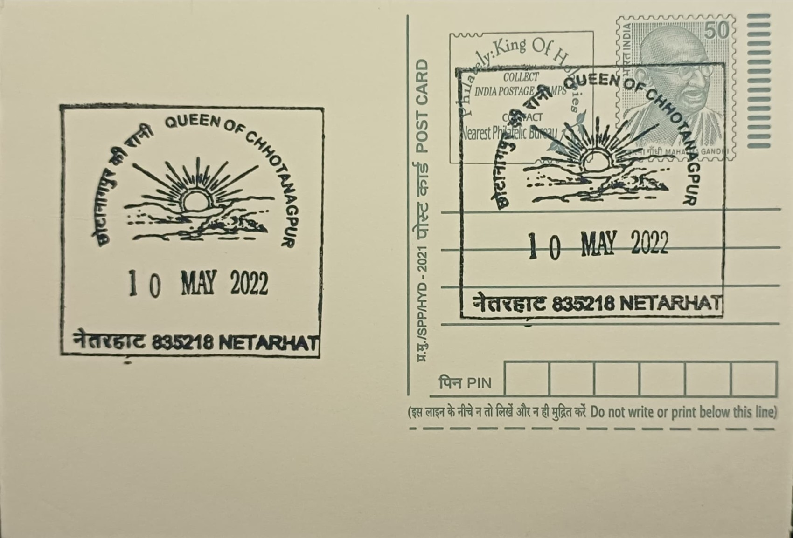

Queen of Chhotanagpur
छोटानागपुर के रानी


The name "Queen of Chhotanagpur" attached itself to Netarhat during the colonial period, when British officials administering Bihar and Orissa discovered the plateau's cool climate and converted the tribal highland into a retreat from the plains' heat. A persistent local legend tied to the site known today as Magnolia Point tells of an English woman named Magnolia who fell in love with a local villager; ostracised by colonial society for the relationship, she is said to have leapt to her death from the cliff, and a sculpture of the couple now marks the spot. The Chalet House, a bungalow raised in the early twentieth century under Lieutenant-Governor Sir Edward Gait, served as the venue where British officers met with village chiefs of the region, anchoring the hill station's identity before independence.
Administratively part of Latehar district and served by the Netarhat Sub-Post Office at PIN 835218, Netarhat sits among the highest points of the Chota Nagpur Plateau at roughly 1,128 metres above sea level. Its significance is twofold: it is Jharkhand's principal hill-station destination, prized for a temperate climate unusual for this part of the Gangetic plain's hinterland, and it is an educational landmark, housing one of eastern India's most selective residential schools. The plateau and its sal forests also form part of the ancestral homeland of Adivasi communities such as the Oraon and Munda, whose villages ring the hill station and whose forest-based livelihoods have shaped the region's land-use patterns for generations.
Netarhat Residential School, locally called Netarhat Vidyalaya, was established on 15 November 1954 by educationist F. G. Pearce with the backing of the Bihar state government, at the initiative of Bihar's first chief minister, Shri Krishna Sinha, who envisioned it as a centre of excellence for rural and tribal talent drawn through competitive entrance examinations. Modelled loosely on British public-school boarding traditions while also drawing on a gurukul-style residential ethos, the all-boys school organises students into ashrams away from their families and has since produced a disproportionate share of the region's civil servants, engineers, and military officers, making it a rare rural institution with a national academic reputation.
Beyond the school and its colonial-era buildings, Netarhat's defining natural features are its viewpoints and waterfalls: the Sunrise Point within the town itself draws visitors before dawn, while Magnolia Point, roughly ten kilometres away, is the preferred vantage for sunset over the plateau's folded ridges. A short distance further, the Upper and Lower Ghaghri waterfalls, reachable only after leaving vehicles behind for a walking trail through sal forest, add a further layer of attraction, and together with the forested terrain have made Netarhat a staple of Jharkhand's ecotourism promotion efforts in recent years.
The hill station's tranquil image has coexisted with decades of tension over land in the wider plateau, where proposals for bauxite mining and the long-stalled Koel Karo hydroelectric project have repeatedly threatened displacement of tribal cultivators, feeding a sustained local movement against land acquisition that has at times drawn confrontation with state authorities. Netarhat today functions primarily as a Jharkhand Tourism-promoted hill resort administered through Latehar district authorities, with state-run guesthouses supplementing the historic Chalet House, now preserved as a small museum of colonial-era artefacts, alongside the residential school that continues to anchor the town's identity as both a retreat and a seat of learning.
| Date of Introduction | November 1, 2016 |
|---|---|
| Address | Sub Postmaster, |
| Netarhat SO, | |
| Latehar (dt.), Jharkhand - 835218. |